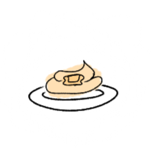
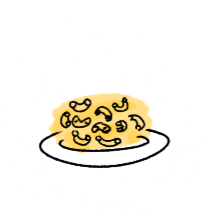
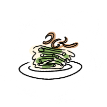
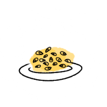
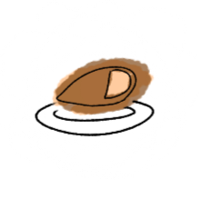
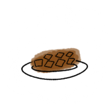
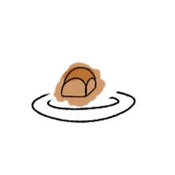

Mashed potatoes

To start off the side rankings, mashed potatoes are really good, when they are done right there nice and creamy, however it is good to have a little bit of chunk in the mashed potatoes, if it's too smooth and creamy it almost feels like baby food, so a little bit of texture with potato chunks in there, and a good amount of butter makes a mashed potatoes a really good side dish.
Overall rating: 9/10
Macaroni and cheese

Macaroni and cheese is another really great Thanksgiving side, Some really good macaroni and cheese dishes have a lot of cheese, it's really important that the sauce is also well made, a smoother sauce is preferred so that it covers the noodles easier, another thing to add would be a crunchy topping on top of the macaroni and cheese like breadcrumbs, maybe even adding bacon on top of it would make it taste better however, as a side dish it's best to keep macaroni and cheese nice and simple.
Overall rating: 9/10
Green bean casserole

Green bean casserole may be an unliked side dish around Thanksgiving time, however after I tried it for the first time last year I can say that it's actually really good, the mushroom soup gives it a nice taste, I'm not a very big fan of onions however, the fried onions on top add a nice crunch, the greens beans themselves are kinda just there, they don't contribute to most of the taste but I believe it's an essential building block for the combination of the casserole.
Overall rating: 7/10
Creamed corn

Creamed corn is it pretty good side dish. The only time I tried it was last year, and it was honestly pretty mid. It wasn't bad; we will get to the bad dishes later on the list, but it wasn't my favorite side. However, it does have a lot of strong competition against it; it was an overall enjoyable side.
Overall rating: 5/10
Turkey

Now on to our entrees is the classic turkey, a turkey is a decent entree, the thing about poultry is that it is oftentimes associated with being dry, and I know that if you cook it so that it's barely at safe temperatures it's still juicy, however I am a very paranoid person and don't like my meats at the bare minimum of being safe, so I kind of overcooked my food a little bit because again I am very paranoid of getting sick, so I've come to find the dry texture a little expected but it's overall a pretty decent dish.
Overall rating: 6/10
Ham

Our other entree is ham, which I would say is better than turkey. In my household, we eat ham sandwiches way more than turkey sandwiches, so the idea of eating ham on Thanksgiving Day may seem a little underwhelming, but I think it's a really good meat it can be nice and juicy. Most of the time it's glazed with a sweet glaze, so it kind of cuts the savoriness of it a little to add a really nice combination of flavor, overall a really good entree.
Overall rating: 8/10
Gravy

Gravy is a classic sauce to add on top of your mashed potatoes and turkey. It adds a lot of flavor to things that are more of a blank canvas, such as mashed potatoes or turkey, which themselves don't have that much flavor to them. It adds a really nice savoriness to those other foods. Overall, a really great sauce.
Overall rating: 8/10
Cranberry sauce
Cranberry sauce would be another sauce that is typical to have around Thanksgiving. I like the idea of cutting some of these savory, fatty foods from the table with a nice sweet sauce, such as cranberry, cranberries; however, in my opinion are just a bit too tart. Not a big fan of fresh cranberries or cranberry juice, the only way I eat cranberries would be sometimes when they're like raisins, unfortunately, not the best sauce to have around Thanksgiving in my opinion.
Overall rating: 4/10
Stuffing

Now I will discuss stuffing, or dressing if you would rather call it, I call it disgusting, everyone I've talked to appears to love this stuff…ing however I am not a really big fan of it, It just tastes like soggy bread, and there's also veggies mixed into it which I feel like could even taste better on their own or repaired differently but to just add it and combination with soggy bread does not sound good, I understand the turkey drippings are meant to add flavor to the stuffing, it does not add much value to the bread, just making it soggy.
Overall rating: 0/10
Dinner rolls

Now on to dinner rolls, which are my preferred bread to have on my plate this time of year. They are fluffy and soft, and pair nicely with all the other flavors on the plate. It is a nice bread to have year-round; it will do great on a Thanksgiving plate.
Overall rating: 8/10
Cornbread

The next bread side would be cornbread, which I have only had once and it is a pretty decent bread to have during thanksgiving, it does have a nice flavor, however I believe a piece of bread should be a bit less intense with flavor to pair better with the rest of the foods on the plates that have their own flavors going on, I believe it would be good to eat on its own however as a side to a meal such as thanksgiving, it may not be the best bread to have.
Overall rating: 4/10
Pecan pie

For the first dessert, I will talk about is pecan pie, which I've only had once years ago; however, I remember not particularly liking it because I found the part around the pecans themselves in the pie to have a weird texture. Not the biggest fan of Pecans myself, so not particularly my favorite pie to have this time of year.
Overall rating: 2/10
Pumpkin pie

Last but not least, we have pumpkin pie, which is my absolute favorite pie. I love pumpkin pie; it has just such a nice, smooth texture to it. I absolutely adore the spice that is in there; it is one of my favorite parts of the fall season.
Overall rating: 10/10